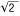

| Math | 算术函数和常量 |
| Math.abs( ) | 计算绝对值 |
| Math.acos( ) | 计算反余弦值 |
| Math.asin( ) | 计算反正弦值 |
| Math.atan( ) | 计算反正切值 |
| Math.atan2( ) | 计算从x轴到一个点之间的角度 |
| Math.ceil( ) | 对一个数上舍入 |
| Math.cos( ) | 计算余弦值 |
| Math.E | 算术常量e |
| Math.exp( ) | 计算ex |
| Math.floor( ) | 对一个数下舍入 |
| Math.LN10 | 算术常loge10 |
| Math.LN2 | 算术常量loge2 |
| Math.log( ) | 计算一个数的自然对数 |
| Math.LOG10E | 算术常量log10e |
| Math.LOG2E | 算术常量log2e |
| Math.max( ) | 返回最大的参数 |
| Math.min( ) | 返回最小的参数 |
| Math.PI | 算术常量PI |
| Math.pow( ) | 计算xy |
| Math.random( ) | 返回一个伪随机数 |
| Math.round( ) | 舍入到最接近的整数 |
| Math.sin( ) | 计算正弦值 |
| Math.sqrt( ) | 计算平方根 |
| Math.SQRT1_2 | 算术常量 1/ |
| Math.SQRT2 | 算术常量 |
| Math.tan( ) | 计算正切值 |